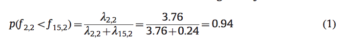
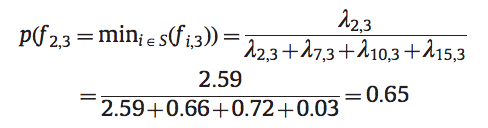
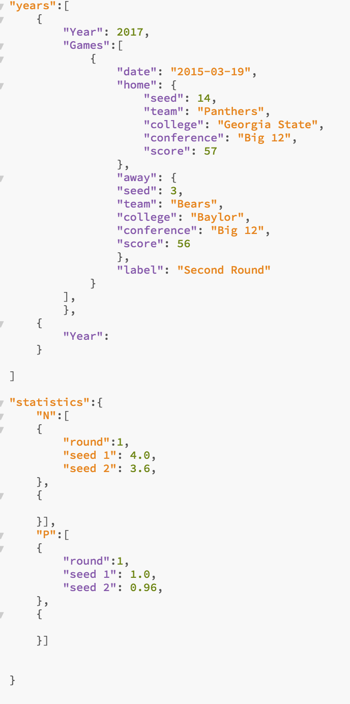

For the tournament bracket statistics website, there will be three different types of accounts: a guest account, a user, and an administrator, with each higher level of authority gaining addition privileges. This plan will have three sections based off different user status.
As a refresher, the website at its most basic will be the following: people will be able to select any year of the NCAA Men's basketball tournament, be able to see the results, as well as be able to generate a random bracket for that particular year based off the following parameters: updated statistics of Sheldon H. Jacobson's work, KenPom rankings, BPI, RPI, or a combination of them (to be discussed in registered user's section). This is discussed in more detail in the initial topic document, and functionality will be explained below.
Specifically, the statistical model used is going to be referenced from: Bracket Odds. First, for each seed, find the number total number of seeds to make it to each round for all tournaments divided by the number of tournaments, now 33. This will give a value: n(i,j), where i is the seed number and j is the round number. Then to calculate the probability that a seed i will win a specific game in round j, take that n(i,j) and divide it by the sum of all possible n(i,j) in round j. So, when filling out a random bracket based entirely on statistical models, it will use these probabilities as weights for randomness. Note, that based off of Sheldon H. Jacobson's work, win rates between the top three seeds in the last three rounds becomes insignificant, so they will be approximately 50%-win chance for those games. Examples for the probability of seed 2 winning in round 2 and then seed 2 winning in round 3 are attached, respectively.


Data:
The following data will need to be obtained and will only be able to be added on once a new tournament occurs: for each year: the team's names for each seed and the winner of each game. Once there is a new tournament, an administrator will be able to add the information for each new year. Data will be stored in a firebase database with a json file with organization like:

Top level data needs to have the following lists: tournament years that will contain specific game information and a team's expert rankings (kenPom, BPI, RPI), statistics which will contain the probabilities mentioned above, and users with their saved brackets and privileges.
Populating the data is going to take a large amount of time and am still debating on the best method. Getting the tournament information and RPI rankings will be easy through the sportradar API, assuming I can obtain an API key (request pending). Once this information is obtained, the statistics data can be updated through javascript functions. If it is not possible to use the API in a timely manner, the backup will be utilizing a python script with Beautifulsoup to webscrape NCAA for game information. Since this information is the most vital, it will be my primary focus to obtain this, especially considering BPI and kenPom rankings have to be web scraped to obtain. They will only be added at a later date.
Filling out a bracket:
So, all users, including guests, will be able to simulate a random bracket based off a selected method (if kenPom, BPI, and RPI are indeed implemented), and then will be able to see the score that that bracket would have obtained for that year. Score is calculated as follows: each correct prediction in round 2 is an additional 10 points, round 3 is 20 points, round 4 is 40 points, round 5 is 80 points, round 6 is 160 points, and round 7 is 320 points, for a possible total of 1920. The winners of each game when populated will be selected based on the probabilities calculated above. For registered users, they have the option to then select on each game to change the winner. The registered user can then save their bracket. If a registered user and the expert rankings are implemented, the user will be able to select a method for each round for the program to populate the bracket (for example: can chose statistics for round 2 and 4, round 3 kenPom, round 5 and 6 BPI, 7 as RPI).
Framework:
All math and probabilities will be calculated utilizing javascript. Game data will be obtained from sportsradar API.
All data and user information will be stored in firebase. I have two options for frameworks for the brackets. The first is utilizing jquery and brackets.js (https://www.jqueryscript.net/chart-graph/Drawing-Tournament-Brackets-with-jQuery-Brackets-js.html). This brackets framework will fill in the information to the bracket. If this brackets framework doesn't work, then I will utilize angular.js along with html and css to draw and populate the brackets. Data visualizations pages will be populated using D3. All information will be stored and updated through Firebase.
A mock up is located at the following google slides commentable page: Mock Up